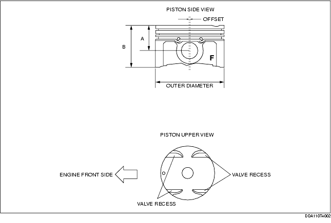

Piston, piston ring, piston pin construction [ZY]
• The pistons are made of heat resistant, highly conductive aluminium alloy.
• Offset pistons are used to reduce piston-slapping noise.
• To prevent the piston from being reassembled in the wrong direction, an F mark is located on the side of piston.
• Valve recesses have been equipped on the intake and exhaust air sides.
• The piston skirt is coated with graphite to reduce friction. (if equipped)
Piston specification

• The following piston rings have been adopted: A barrel face ring for the top ring, a taper-under cut ring for the second ring, two side rails and an expander for the oil ring. Also, low tensile load oil rings have been adopted for friction reduction and fuel consumption improvement.
• The piston pin is made of chrome steel alloy with superior rigidity.